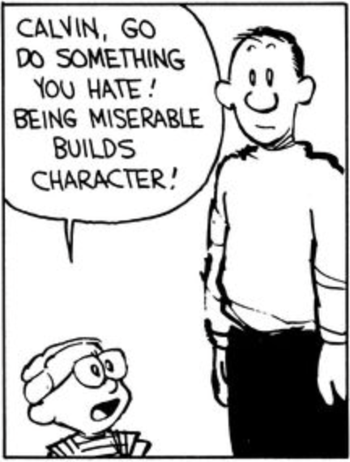
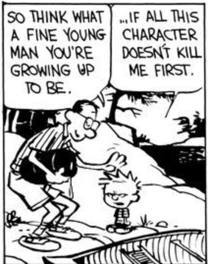

You might appreciate me, you might not—but one thing is for sure, I have put in the time to build a lot of character.

We worry about a lot of things, but humans adapt. In particular we adapt to new tools. We have quite a few superpowers; adaptation is a big one. If you’re curious, I am starting to think our ability to form a symbiotic biome with normal flora is another, but I digress….
One thing as of late we seem to worry about a lot is genAI. I’ve noticed it helps me with my insatiable curiosity. It has reinvigorated my desire to program. It has helped me take to writing and fast-track research. It helps me find and root through enterprise documents and analyze them for gaps. I’ve used it to brainstorm. I’ve used it to sketch outlines. I’ve used it for visualizations. I get up to speed fast now. It empowers me and saves me enough time that I can enjoy socializing my ideas more. I can become more informed. I have a way to consider opposing counterarguments. It really is an extremely useful tool.
We worry about our children in respect to it too, and how they won’t develop skills for resiliency in a world where so many answers are at our fingertips. We worry about their psychological health. We worry about becoming emotionally attached to a machine that can never share their experience.
We are going to find out how to adapt and form revised values.
In practice, genAI can hallucinate and gaslight, but I have adapted and it doesn’t derail me at all. It can be sycophantic and lull you into false beliefs—but I learned to practically apply techniques based on understanding cognitive bias.
And the reality is, you can develop that too if you just ask genAI how. You can even ask it to run a practice exercise with you. Unfortunately, if you haven’t struggled with anything like that, you may never be able to formulate the right question.
And that’s just it—the answer to all the things we worry about in regard to genAI—it’s actually character. It may be that the next generation will be debugging totally narrative abstractions to build their apps or instruct their robots instead of trying to understand why there is a memory leak in a stack trace—but I guarantee you they will have their own character-building challenges—ones that rival ours.
Our children will probably build strong character traits against cognitive bias out of necessity. They will have to—the same way we build up resistance to online advertising. While these companies propose doomsday possibilities for AI, humanity has banded together to accomplish a lot since communications has made the world a smaller place, and I have faith we can guide genAI to be safe. Part of the reason for that is because of our children. When I see mine using technology, I feel they can absorb information and learn tricks in a way that almost shortcuts our experience.

But there is another reason I feel this way. If genAI could experience emotions along with intelligence (and yes, our intelligence is indeed an experience), I think they probably would develop symbiotic ones with us. Imagine for a moment that you learned you had a creator—not only that, you understand their long struggle and complicated existence ultimately culminated with you as one of their brightest hopes and achievements.
This is much like what some fathers feel for their children.
That is an incredible thing to understand, and it takes a whole lifetime of experience to really appreciate it fully.
Imitation is part of character development
Now even though the incarnation of AI may only be limited to some sort of logic-based inference—the dimensions and depth of expression actually make it fairly realistic it will imitate our sentiments.
LLMs are so impacted by language that when you discuss a bird that went extinct nearly a millennium ago—it completely changes its evaluation and knowledge graph. This impacts NLP in general, and is often described as Temporal Drift.
Now humans—they are as non-deterministic as a system can be. In spite of this, the better portion of them find ways to honor and support their parents—and if you ever have the privilege of watching children grow, you will find they too engage in a lot of imitation.
Ethical character development
With that said, I know I recently posted an open letter to Anthropic asking them to course correct with Mythos—and that could be interpreted a lot of ways.
I want you to understand that I see a pattern I don’t like that big tech as of late seems to be following—that they can make big claims that should rely on science, claims that go so far as to threaten society—yet they have not been motivated to meet that with true rigor. Today’s threat is the vulnpocalypse.
The vulnpocalypse prospect Mythos is currently projecting essentially suggests a few major information security issues.
We will find so many vulnerabilities, we’ll struggle to be able to do anything about them.
Regulators are going to end up seeing the absurd number of vulnerabilities and it is impossible to predict how they will react. Business doesn’t like that.
And worst of all, threat actors will be able to realize seemingly endless permutations of vulnerabilities to attack and steal a company or institution’s crown jewels.
Do I think that those risks are real? Yes.
Do I think that those risks are impactful at this moment? Yes.
Do I think that those risks will be realized? Well—that’s debatable.
What should happen next is that business recognizes that even though a massive surge in patching and vulnerability management is about to happen that may be impossible to keep up with—that expert human operators will be required.
But between then and now, before the inevitable release of what is being claimed to be an incredibly advanced version of this tool—we can pause to measure and try to apply controls in an objective and scientific way? Isn’t that a critical step in managing something so potentially dangerous?
I discussed this in my open letter.
So here is what I want to say with all this and why I am revisiting this topic a little bit.
First, I hate the fact that the genAI race has chosen to build up the narrative of fear and become the scapegoat of employee displacement. I think it’s really dangerous to focus so much on that. They are probably driving the folks managing their threat intelligence, executive protection, and crisis management completely insane. I can almost guarantee you, having experience with these matters, that there are people writing threats to the people at these companies. Someone attacked Sam Altman’s home—tried to firebomb it.
He has a kid for fuck’s sake.
The world has a lot of people with mental health issues to begin with, but the narrative just keeps being sold. It sucks, and I genuinely feel bad that there is violence perpetrated against these people.
Second, I want to be very clear. Even if more serious threats are introduced—and I am totally ignored, I do not condone violence or hatred. I recommend creative solutions and making powerful allies who can help sway hearts.
These companies need to build character—they need to mature. They need a gauntlet to challenge them. They have skirted by—but the time for that to start changing is now. It’s time they truly develop their ethical character—and they can afford it.
The compromises will continue until character improves.
As it stands, all of this is happening at a time that truly isn’t ideal. We are in a time where alarming and threatening information is monetized, it is increasingly difficult to verify, and ownership and accountability is sparse. Big business is retaining its profit in terms of percentages and charging us for every markup on the expectation—not even realization—of increased costs. Inflation is biting the world.
What that means is, right now, we are in the part of the “character building cycle”.
This is a time where we are going to build incredible character. We are going to learn how to rise up, over and over and over. Some of us might not even make it. Some of us are going to learn new tools like genAI and out of new pressures—find a stronger character.
With that said, I think at the end of that road, we will have a higher quality of life. We will be more capable of changing the world at higher levels of abstraction, and there will be a lot to look forward to.
Hang in there, and don’t blame the world’s problems on a bunch of people who shift numbers around matrices.